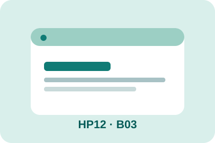

SẢN PHẨM BÀI HỌC
Quick Blog Interaction
Đăng ký một sự kiện click để bật/tắt phần nội dung trên website và giải thích handler.
Một điều thú vị về website
Nhấn nút để xem một gợi ý và nhấn lần nữa để ẩn.
Gợi ý: DOM là cầu nối giữa JavaScript và các phần tử HTML.
Nội dung đang được ẩn.
Dữ liệu minh họa, không sử dụng thông tin cá nhân. Quiz thực hiện ở nhà.